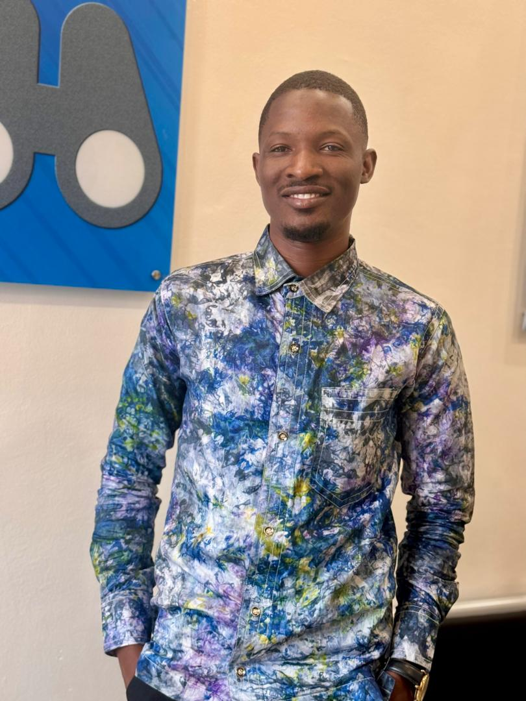

Qui suis-je ?
Je suis Kourouma Abdoulaye, Technicien Support Informatique et Développeur Full-Stack & Mobile avec plus de 3 ans d'expérience. Je travaille actuellement chez Dvelge Group en tant que Technicien Informatique Support N2, où j'assure l'installation, la maintenance et le support technique avancé.
Mon expertise couvre deux domaines complémentaires : le développement web et mobile (Laravel, Flutter, React JS) et les réseaux & systèmes (Windows Server, VLAN, DHCP, DNS, Cisco Packet Tracer). J'ai commencé ma carrière comme stagiaire webmaster chez InformAfrik en 2021, où j'ai progressivement évolué jusqu'au poste de Webmaster principal.
Mon objectif est d'apporter une réelle valeur technique à mes clients et employeurs, en traduisant les besoins métier en solutions fiables, évolutives et maintenables, de la base de données à l'application finale.

💼 Expérience Professionnelle
Technicien Informatique (Support N2)
Dvelge Group
- Installation, configuration et maintenance des équipements informatiques
- Support technique niveau 2 et dépannage avancé
- Vérifications préventives et correctives
- Conformité aux normes de sécurité et procédures internes
- Collaboration avec l'équipe technique pour les projets IT
Webmaster
InformAfrik Business Center (IBC)
- Gestion, maintenance et optimisation du site web
- Hébergement, sécurité et sauvegardes
- Développement de nouvelles fonctionnalités
- Analyse de performance et recommandations techniques
Assistant Webmaster
InformAfrik Business Center (IBC)
- Assistance à la mise à jour du site web
- Participation aux projets digitaux
- Intégration de contenus et petites corrections web
Formateur Informatique
Cabinet CAMACI
- Formation des apprenants sur Windows, Word, Excel, PowerPoint, Publisher et Access
- Préparation des supports de formation
- Encadrement pratique et théorique
Stagiaire Webmaster
InformAfrik Business Center (IBC)
- Assistance à la gestion et à la mise à jour du site web
- Découverte des outils de gestion web et bonnes pratiques digitales
Stagiaire Réseaux & Informatique
All For TIC
- Routage, câblage réseau, sertissage RJ45
- Configuration et simulation sous Cisco Packet Tracer
- Initiation à l'administration Windows Server
🎓 Formation
🏛️ Institut Technopole
2018 – 2021
Licence Professionnelle en Télécommunication
Diplômé en télécommunications à l'Institut Supérieur de la Technologie Technopole.
💻 Développeur Full Stack – CEDIG
2019 – 2020
Certificat de fin de formation
Développement web et application web : HTML/CSS, PHP, MySQL, JavaScript.
🎨 Graphic Design – Adobe Photoshop
Mansara GTS Technologie
Attestation de fin de formation
🌐 Formation WordPress
Orange Digital Center – Guinée
Attestation de fin de formation
Maintenance et optimisation de sites WordPress.
Mes Centres d'Intérêt
Développement & Tech
Cours en ligne, veille technologique et exploration de nouvelles technologies.
Design Graphique
Création d'interfaces intuitives et esthétiques avec Adobe Photoshop.
Sport & Santé
Le sport fait partie de mon quotidien pour maintenir un équilibre sain.
Bénévolat
Partage de connaissances et contribution à des projets communautaires.
Mes Valeurs
🎯 Qualité
Je m'efforce toujours de livrer un code propre, maintenable et performant.
🤝 Collaboration
Le travail en équipe et le partage de connaissances sont essentiels à mon approche.
🔄 Amélioration Continue
J'apprends de chaque projet et cherche constamment à améliorer mes compétences.